전파통신기능사(구) (2005-04-03 기출문제)
1과목: 임의 구분
1. 주파수변조 수신기에 스퀄치(squelch)회로의 역할은?
- 수신기에서 수신신호가 없을 때 수신측의 잡음을 억제
- 수신주파수를 자동으로 조정
- 수신측 신호대 잡음을 저하
- 수신측 주파수 편이를 제어
(정답률: 알수없음)

2. 다음 중 위성 통신의 특징을 나타낸 것은?
- 회선 설정이 복잡하다.
- 다원 접속이 가능하다.
- 신뢰성있는 통신을 할 수 없다.
- 보안 유지를 위한 암호 장치가 필요없다.
(정답률: 알수없음)
3. 수신기의 종합 주파수 특성 및 파형의 일그러짐률 등에 따라 정해지는 것은?
- 선택도
- 안정도
- 충실도
- 잡음지수
(정답률: 알수없음)
4. 안테나에 관한 저항 중 클수록 좋은 것은?
- 도체저항
- 안테나 임피던스
- 급전선 임피던스
- 복사저항
(정답률: 알수없음)
5. 다음 중 디엠퍼시스(De - emphasis)회로 설명과 관계 없는 것은?
- 적분회로
- 프리엠퍼시스 회로와 반대되는 역할을 한다.
- 수신측의 고음부 강조
- FM 수신기 회로에 사용된다.
(정답률: 알수없음)
6. 전리층의 발생 원인은?
- 전자파
- 우뢰
- 적외선
- 자외선
(정답률: 알수없음)
7. 어떤 전파를 레헤르선(Lecher wire) 주파수계로 측정하였던바 인접한 전압이 최대가 되는 점 사이의 거리가 5[m]였다. 이때 주파수는 몇[㎒]가 되는가?
- 30[㎒]
- 50[㎒]
- 80[㎒]
- 120[㎒]
(정답률: 알수없음)
8. 동일 전파를 수백m 떨어진 여러 장소에서 수신 안테나로 받아서 합성하는 방법은?
- 공간 다이버시티 수신방식
- 주파수 다이버시티 수신방식
- AGC (자동 이득 제어)
- 편파 다이버시티 수신방식
(정답률: 알수없음)
9. 무선 송신기의 완충 증폭기의 목적을 가장 적절하게 나타낸 것은?
- 공중선계의 소요전력을 공급하기 위하여
- 후단 증폭부의 영향이 발진기에 미처 발진 주파수가 변동하는 것을 막기 위하여
- 종단 전력증폭기에 필요한 입력을 주기 위하여
- 발진주파수를 출력주파수까지 높이기 위하여
(정답률: 알수없음)
10. 전원전압이 무부하일 때의 직류 출력전압 115[V], 정격부하로 했을 때의 출력전압 100[V]라 하면 전압 변동률은 몇 [%]인가?
- 5[%]
- 10[%]
- 15[%]
- 20[%]
(정답률: 알수없음)
11. 컬렉터 효율이 70(%)인 송신기에 입력으로 직류 입력 전압 1(㎸), 직류입력전류 100(㎃)를 가하였다. 이 송신기의 출력은 몇 (W)인가?
- 60(W)
- 70(W)
- 80(W)
- 90(W)
(정답률: 알수없음)
12. 정지위성의 고도는 약 얼마인가?
- 19500 km
- 27300 km
- 35800 km
- 42400 km
(정답률: 알수없음)
13. 전파가 전리층에 들어갔을 경우에 받는 물리적 작용을 설명한 내용 중 옳은 것은?
- 전리층의 굴절률은 전자의 밀도 및 전파의 주파수에 무관하므로 모든 전파가 반사한다.
- 전리층 중에는 다량의 자유전자가 있으므로 입사된 전파의 에너지는 다소 감쇄된다.
- 전리층에 전파가 입사하더라도 편파면은 고정되어 있으므로 직선편파를 하게 된다.
- 전리층에 입사된 모든 전파는 전리층에 흡수되고 만다.
(정답률: 알수없음)
14. 위성에 설치하는 안테나로서 좁은 지역을 향하여 강력한 빔을 발사하기 위한 안테나로서 방향을 조절할 수 있는 안테나는?
- 비컨 안테나
- 헤리컬 안테나
- 글로벌 안테나
- 파라볼라 안테나
(정답률: 알수없음)
15. 브라운관상에 나타나는 파형을 보고 변조도를 측정하였다. 옳은 계산식은?
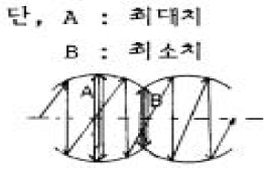
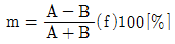
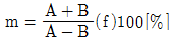
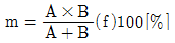
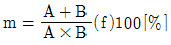
(정답률: 알수없음)
16. FM 송수신기에서 수신 주파수를 자동으로 제어해 주는 회로는?
- AGC
- ALC
- AVC
- AFC
(정답률: 알수없음)
17. 진폭 변조 방식과 비교하여 주파수 변조 통신 방식의 특징이 아닌 것은?
- 점유주파수 대역폭이 넓다.
- 주로 장파대 이하에서 사용된다.
- S/N비가 개선된다.
- 페이딩의 영향을 적게 받는다.
(정답률: 알수없음)
18. 수신기의 감도에 대한 설명 중 가장 타당한 것은?
- 얼마나 약한 전파까지를 수신할 수 있느냐의 극한을 표시하는 양으로서 주로 종합이득과 내부잡음에 의해서 결정된다.
- 출력중에 안테나에 유기한 변조 파형을 어느 정도까지 정확하게 재현할 수 있느냐 하는 정도
- 조정한 수많은 주파수 중 어느 하나를 어느 정도까지 분리선택하여 수신할 수 있느냐 하는 정도
- 입력회로의 전력과 출력회로의 전력과의 비를 데시벨로 나타낸 것
(정답률: 알수없음)
19. 송신된 전파가 어느정도 떨어진 위치에서 수신된 전계의 세기를 무엇이라고 하는가?
- 전계강도
- 송신강도
- 반사강도
- 복사강도
(정답률: 알수없음)
20. λ/4 수직접지 Antenna의 수평면내의 지향 특성은?
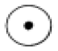
(정답률: 알수없음)
2과목: 임의 구분
21. 다음 영문을 국역하면 어느 문장이 가장 적합한가?
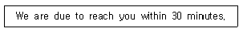
- 본선은 귀곳에 30분후에 도착하겠다.
- 본선은 30분에 귀곳에 도착하여야 한다.
- 본선이 귀곳에 도착하려면 30분 정도 걸릴 것 같다.
- 본선은 30분내에 귀곳에 도착할 예정이다.
(정답률: 알수없음)
22. 다음 중 국제전기통신연합의 목적이 아닌 것은?
- to maintain and extend international cooperation between all Members of the Union
- to promote the use of telecommunication services
- to harmonize the actions of Members
- to maintain and extend the safety of life at sea
(정답률: 알수없음)
23. 다음 문장의 ( )안에 가장 적합한 것은?
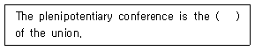
- top system
- structure
- supreme
- council
(정답률: 알수없음)
24. 다음의 통신약어중 '도착예정시간'을 나타내는 것은?
- ETD
- ETA
- RPT
- SLT
(정답률: 알수없음)
25. 다음 질문에 대한 답의 ( )안에 적합하지 않은 것은?
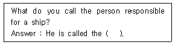
- captain
- chief mate
- master
- commander
(정답률: 알수없음)
26. 다음 문장의 ( )안에 가장 적합한 것은?
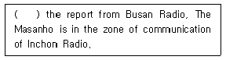
- Due to
- In accordance
- According to
- So as to
(정답률: 알수없음)
27. 다음 중 알파벳 통화표에 의한 단어가 틀린 것은?
- T : Tango
- M : Mike
- P : Pama
- W : Whiskey
(정답률: 알수없음)
28. 다음 문장의 뜻을 가장 적합하게 나타낸 것은?
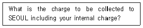
- 서울로의 호출요금은 얼마입니까?
- 당국의 국제요금은 서울호출요금을 포함하여 얼마 입니까?
- 서울앞의 전화요금은 당국의 국내요금을 합하여 얼마입니까?
- 서울앞의 징수요금은 귀국의 국내요금을 합하여 얼마입니까?
(정답률: 알수없음)
29. 전보문에서
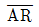
를 타전하는데 이는 무엇을 가리키는가?- End of work
- Starting signal
- Waiting period
- End of transmission
(정답률: 알수없음)
30. 무선전화용 숫자 통화표로 잘못 표현한 것은?
- 0 : NADAZERO
- 1 : UNAONE
- 9 : NINONINE
- 6 : SOXISIX
(정답률: 알수없음)
31. 다음 괄호안에 가장 적합한 단어는?
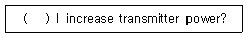
- Can
- Shall
- May
- Have
(정답률: 알수없음)
32. Select wrong one of the Phonetic Alphabet used when giving call-sign ; "HLRI".
- H : Hotel
- L : Lima
- R : Romeo
- I : Indo
(정답률: 알수없음)
33. 다음 문장의 영역으로 가장 옳은 것은?
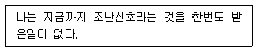
- I have ever received distress signal.
- I have never received distress signal.
- I had never received distress signal.
- I had been never receive distress signal.
(정답률: 알수없음)
34. 다음 문장의 ( )에 가장 적합한 것은?
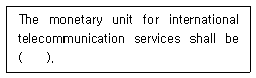
- the gold franc
- the dollar
- the yen
- the pound
(정답률: 알수없음)
35. 다음이 정의하는 용어는?
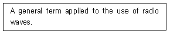
- Communication
- Radiotermination
- Radio
- Radio Waves
(정답률: 알수없음)
36. ITU 의 최고의결기관은?
- World Telecommunication Conference
- Radio Communication Bureau
- World Conference International Communication
- Plenipotentiary Conference
(정답률: 알수없음)
37. 다음 영문의 가장 적합한 국역은?
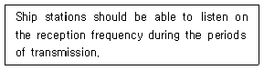
- 선박국은 송신기간중 수신주파수로 청수할 수 있어야한다.
- 선박국은 수신기간중 송신주파수로 청수할 수 있어야한다.
- 선박국은 송신중 수신용 주파수를 청수하여야 한다.
- 선박국은 송신중 주파수를 수신할 수 있어야 한다.
(정답률: 알수없음)
38. 다음 문장의 ( )속에 알맞는 단어는?
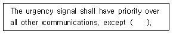
- alarm
- safety
- distress
- message
(정답률: 알수없음)
39. Choose the incorrect meaning of the following.
- Read back - 이 전보를 수신한 대로 복창하라.
- Words twice - 단어 하나 하나를 2회씩 보내라.
- Say again - 다시 말하라.
- Wait out - 대기 상태를 종료하라.
(정답률: 알수없음)
40. 다음 중 용어의 번역이 틀리게 짝지어진 것은?
- 호출 주파수 - calling frequency
- 다음 기항지 - last port of call
- 통신 주파수 - working frequency
- 통신권 - the zone of communication
(정답률: 알수없음)
3과목: 임의 구분
41. 디지털선택호출경보를 이용할 수 있는 최소한 하나의 VHF 해안국의 무선전화 통신범위내의 해역을 무엇이라고 하는가?
- A1해역
- A2해역
- A3해역
- A4해역
(정답률: 알수없음)
42. 해상이동업무가 아닌 것은?
- 선박국과 해안국간의 무선통신업무
- 선박국 상호간의 무선통신업무
- 해안국 상호간의 무선통신업무
- 선상통신국 상호간의 무선통신업무
(정답률: 알수없음)
43. 다음 중 무선국 허가증에 기재 할 사항으로 맞지 않는 것은?
- 무선국의 목적
- 허가의 유효기간
- 무선설비의 제작자
- 공중선 전력
(정답률: 알수없음)
44. 전령통신의 취약점이 아닌 것은?
- 신속성이 결여되어 있다.
- 계절 또는 기후의 영향을 받는다.
- 경제성이 없다.
- 안전성이 없다.
(정답률: 알수없음)
45. 다음 중 ITU의 공용어 및 업무 용어가 아닌 것은?
- 영어, 불어
- 중국어, 러시아어
- 아랍어, 스페인어
- 라틴어, 그리스어
(정답률: 알수없음)
46. 다음 해상이동업무에 있어서 통신의 우선순위가 가장 낮은 것은?
- 비상통신
- 안전통신
- 긴급통신
- 조난통신
(정답률: 알수없음)
47. 다음 중 인공위성에 개설하여 위성방송업무외의 무선통신업무를 행하는 무선국은?
- 위성국
- 우주국
- 기지국
- 지구국
(정답률: 알수없음)
48. 통신 보안이 필요한 요인으로 가장 타당한 것은?
- 통신 내용을 탐지하는 도청 능력이 강화되기 때문
- 통신 내용이 평문으로 취급되기 때문
- 무선 통신 방법에 취약점이 많기 때문
- 일반적으로 수신기가 많이 보급되기 때문
(정답률: 알수없음)
49. 자재 보안 방법중 통신소 접근을 방지하기 위한 방법으로 가장 타당한 것은?
- 통신소 내부 방음 시설
- 취급자를 최소한으로 제한 할 것
- 통신소 출입문에는 보호구역 표시
- 암호자재는 취급 인가를 받아 취급
(정답률: 알수없음)
50. 전화 통신의 보안 대책과 관계 적은 것은?
- 음어 및 약호 등으로 비밀 내용을 은폐한다.
- 비밀이나 중요 내용의 통화를 억제한다.
- 전화기에 자동 보안장치를 시설한다.
- 중요내용은 야간에만 통화한다.
(정답률: 알수없음)
51. 무선통신의 원칙에 해당되지 않는 사항은?
- 무선통신은 반드시 신속하게 하여야 한다.
- 무선통신을 할 때에는 자국의 호출부호를 송신하여야 한다.
- 무선통신에 사용하는 용어는 될수있는 대로 간명하여야 한다.
- 무선통신은 정확히 하고 통신상 오류는 즉시 정정하여야 한다.
(정답률: 알수없음)
52. 통신보안과 통신정보를 비교한 중 틀린 것은?
- 통신정보는 효과측정이 용이하다.
- 통신정보는 수집기능이다.
- 통신보안은 공격수단이다.
- 통신보안은 국가안보에 중대한 영향을 끼칠 우려가 있다.
(정답률: 알수없음)
53. 제1침묵 시간에 발사가 제한되는 주파수의 범위는?
- 2182 ± 8.5[㎑]
- 2182 ± 15[㎑]
- 500 ± 5[㎑]
- 500 ± 8.5[㎑]
(정답률: 알수없음)
54. 주파수대 약칭에서 VHF(미터파)의 주파수 범위는?
- 3㎒ ∼ 30㎒
- 30㎒ ∼ 300㎒
- 300㎒ ∼ 3,000㎒
- 3㎓ ∼ 30㎓
(정답률: 알수없음)
55. 국제전기통신연합(ITU)의 소재지는?
- 뉴욕
- 제네바
- 런던
- 베른
(정답률: 알수없음)
56. 통신 보안의 목적과 관계가 없는 것은?
- 국가 기밀과 산업 정보 및 개인 비밀의 누설 가능성을 사전에 제거하는 것이다.
- 국가 기밀, 산업 정보 및 개인 비밀의 통화는 최소화하는 것이다.
- 도청 당한 정보의 분석이 지연되도록 하는 방책을 강구하는 것이다.
- 정보 출처의 원인이 되는 통신망을 도청하는데 최선의 노력을 한다.
(정답률: 알수없음)
57. 다음 중 무선국 허가의 심사기준이 아닌 것은?
- 무선설비가 기술기준에 적합할 것
- 주파수 지정이 가능할 것
- 무선종사자의 배치 계획이 자격·정원배치기준에 적합 할 것
- 설치유치할 재정적 기초가 있을 것
(정답률: 알수없음)
58. 다음 중 ITU의 전파통신분야에 포함되지 않는 것은?
- 지역전파통신회의
- 세계전기통신개발회의
- 전파통신총회
- 전파관리위원회
(정답률: 알수없음)
59. 국제 전기통신연합의 목적이 아닌 것은?
- 전기통신의 개선과 합리적인 이용을 위하여 모든 회원 국간의 협력증진
- 전기통신의 효율을 증진하기 위하여 최소한으로 이용 억제
- 전 세계 주민에게 새로운 전기통신기술의 혜택을 확대
- 전기 통신분야에 있어서 개발 도상국에 대한 기술지원을 장려, 제공
(정답률: 알수없음)
60. 방향 탐지에 대한 방어책이 아닌 것은?
- 불필요한 통신 또는 전파발사를 제한한다.
- 통신제원을 수시 변경한다.
- 송신출력을 높인다.
- 무선침묵을 유지한다.
(정답률: 알수없음)